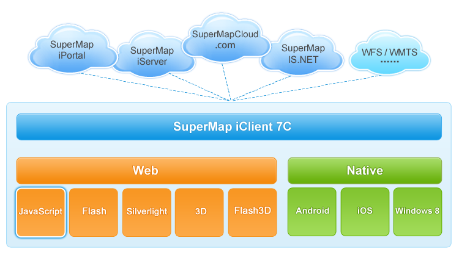

SuperMap iClient 7C for JavaScript 产品简介
SuperMap iClient 7C for JavaScript 是一款在服务式GIS架构体系中， 面向 HTML 5的应用开发，支持多终端、跨浏览器的客户端开发平台。 SuperMap iClient 7C for JavaScript采用 HTML + CSS + JavaScript 的开发组合，无需安装任何插件， 便可在终端浏览器上实现美观的地图呈现， 动态实时的要素标绘，以及与多源 GIS 服务的高效交互，快速构建内容丰富、响应迅速、体验流畅的地图应用， 同时支持离线存储与访问地图功能，满足用户在离线状态下的地图应用。

图1 SuperMap iClient 7C for JavaScript 与其他产品架构关系
SuperMap iClient 7C for JavaScript 的技术特点
- 灵活的交互设计与丰富的数据呈现方式
SuperMap iClient 7C for JavaScript 产品面向 HTML 5 应用开发， 可在 HTML 页面利用丰富的图形、图表、图像以及动画等实现 GIS 数据的动态呈现与灵活交互。 基于 HTML 5 用于绘画的新元素 Canvas 实现了地图图片的高效、稳定呈现。 SuperMap iClient 7C for JavaScript 脱离客户端插件的限制，可灵活构建多终端、跨浏览器的服务式 GIS 应用。 - 支持多终端访问
SuperMap iClient 7C for JavaScript 支持多终端模式的 Web 应用开发，包括个人电脑、平板电脑、手机等多种 终端上的浏览器应用，为用户的系统构架提供丰富选择。 - 支持多源地图数据
SuperMap iClient 7C for JavaScript 支持 SuperMap iServer 7C 服务及多种标准第三方服务，并支持各种服务在客户端的无缝聚合。 包括 OpenGIS 协会制定的 WMS、WFS、KML等标准格式 服务及 Google Maps、ArcGIS Map、Yahoo! Map、KaMap，MSVirtualEarth 等第三方服务。 同时支持超图云服务，包括在线地图服务或通过第三方 API 开发得到的地图应用云。 SuperMap iClient 7C for JavaScript 产品将在服务式 GIS 体系下为用户提供更好的 Web 应用支撑。 - 支持地图离线缓存
SuperMap iClient 7C for JavaScript 基于 PhoneGap 开源开发框架实现地图离线缓存的插 件化,可将已有的地图应用直接打包生成支持 Android 的应用程序，满足用户在离线状态下的地图应用。
SuperMap iClient 7C for JavaScript 提供的功能
- SuperMap.Layer 命名空间下的功能：
- SuperMap 云服务图层类
- 分块缓存图层类
- 分块动态 REST图层类
- SuperMap iServer 7C 定义的图层类的基类
- 矢量要素渲染图层类（渲染方式有 SVG、VML、Canvas、Canvas2）
- SuperMap.Control 命名空间下的功能：
- 地图拖拽控件
- 图层选择控件
- 鹰眼控件
- 比例尺控件
- 平移缩放控件
- 大绘制要素类控件
- 触摸设备的缩放控件
- 支持触摸设备触摸操作的控件
- SuperMap.REST 命名空间下的功能：
- 量算功能
- 距离量算
- 面积量算
- 查询功能
- 距离查询
- 几何对象查询
- SQL 查询
- 范围查询
- 专题功能
- 单值专题图
- 范围分段专题图
- 标签专题图
- 点密度专题图
- 等级符号专题图
- 统计专题图
- 空间分析功能
- 缓冲区分析
- 叠加分析
- 表面分析
- 动态分段
- 空间关系分析
- 网络分析功能
- 最近设施分析服务类
- 最佳路径分析服务类
- 服务区分析服务类
- 选址分区分析服务类
- 旅行商分析服务类
- 多旅行商分析服务类
- 耗费矩阵分析服务类
- 数据功能
- 数据集ID查询服务类
- 数据集几何查询服务类
- 数据集缓冲区查询服务类
- 数据集 SQL 查询服务
- 数据集编辑服务类
- 交通换乘分析功能
- UGC 图层服务功能
- UGC 栅格图层类
- UGC 影像图层类
- UGC 矢量图层类
- UGC 专题图图层类
SuperMap iClient 7C for JavaScript 的目录结构说明
- apidoc
apidoc 存放产品的类参考，点击 index.html 文件可以查看产品的控件和所有接口的列表。 - examples
examples 存放 SuperMap iClient 7C for JavaScript 产品页面及其相关资源，产品页面包括产品介绍、开发指南、示范程序、技术专题文档，其中：
产品介绍 给用户介绍了产品是什么，其体系架构、功能和产品包结构等。 该部分主要从整体上帮助使用者了解产品；
产品开发指南 介绍了产品包获取方法以及产品包的使用方法和基本开发流程， 方便用户快速掌握产品的基本开发方法；
示范程序 提供了产品所有示范代码的使用,给开发者提供案例参考；
类参考 提供所有控件、对象的接口列表，为开发者提供接口使用参考；
技术专题 介绍了产品的一些关键技术，主要涉及高性能矢量渲染、 动态分段、离线缓存与 App 等。 - libs
libs 文件夹存放产品的库文件以及用于国际资源化的文件。 - resource
resource 为产品使用的资源。目前包括 PhoneGap、WinRTApp、AppPackages 文件夹。
PhoneGap 存放 PhoneGap 框架以及基于此框架实现的离线存储范例。通过 PhoneGap 开发框架实现离线存储与访问地图功能，满足用户在离线状态下的地图应用。
WinRTApp 存放基于 Windows 8 JavaScript 版 Windows 8 应用商店程序的开发的源码文件，该源码程序基于SuperMap 云服务图层，实现基本的地图浏览、缩放及量测功能。
AppPackages 存放基于 Windows 8 JavaScript 版 Windows 8 应用商店程序的打包文件,下载后可以在直接在Windows 8系统的PC直接安装。 - theme
theme 文件夹存放产品使用的主题文件。包括 default、image 两个文件夹，其中：
default 存放产品类库默认样式文件；
image 存放控件的图像资源；
- index.html
产品首页，启动 index.html 文件可查看产品兼容性和产品变更信息， 通过首页，可以链接到产品介绍，产品开发指南，示范程序，类参考以及技术专题等页面。